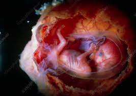

Four months pregnant is kind of a big deal. Lots of exciting milestones occur this month — not least of which is that you are now entering the second trimester. Read on to find out more about symptoms you may experience at four months pregnant, how your baby is developing this month, and get our helpful checklist on the kinds of things to take care of in the coming weeks.
Although you might not experience all of them, these are some of the more common pregnancy symptoms at four months pregnant:
Pickles and ice cream, anyone? Go ahead and indulge your cravings within moderation, but don’t neglect your overall balanced pregnancy diet. However, if you feel the urge to eat non-food items, like chalk, dirt, or laundry detergent, don’t give in to these cravings. Instead, consult your healthcare provider, as this could be a sign of a condition called pica.
Pickles and ice cream, anyone? Go ahead and indulge your cravings within moderation, but don’t neglect your overall balanced pregnancy diet. However, if you feel the urge to eat non-food items, like chalk, dirt, or laundry detergent, don’t give in to these cravings. Instead, consult your healthcare provider, as this could be a sign of a condition called pica.
If your gums are swollen or if they bleed when you brush or floss, it could be gingivitis, a type of gum disease. Pregnancy hormones can make you more susceptible to gingivitis, and you may find that your gums are more sensitive than usual. To relieve some of the discomfort, brush with a soft bristled toothbrush twice a day, rinse with warm salt water as necessary, and see your dentist at your regular six-month checkup or sooner if needed.
These thin, reddish or purple-toned veins on the surface of the skin on your face or legs are a less severe version of varicose veins. Changes in circulation during pregnancy due to your increased blood volume can cause this symptom. Spider veins usually fade on their own after you give birth.
These reddish, brown, or purplish streaks can start to appear on your belly, breasts, buttocks, or thighs as your skin stretches during pregnancy. It’s not possible to prevent them, but keeping your skin moisturized can help reduce irritation and itchiness during pregnancy. These marks often fade over time after your baby is born.
Is your nose feeling a little stuffed up, or are you getting the occasional nosebleed? The extra blood volume in your body and hormonal changes can cause nasal mucus membranes to swell and bleed. If this is a problem for you, make sure you’re staying hydrated, and try saline nasal drops to help relieve congestion. You can also use a humidifier in your bedroom at night and apply petroleum jelly to your nostrils.
If you feel a burning sensation when you pee, you may have a urinary tract infection, or “UTI” for short. This happens when bacteria enter the urethra. Moms-to-be are more susceptible to UTIs because the growing uterus puts pressure on the bladder, making it more difficult to completely empty the bladder. If leftover urine contains bacteria, a UTI can develop. A UTI can become a more serious bladder or kidney infection if left untreated, so if you notice painful urination (sometimes even combined with back pain and fever), see your healthcare provider.
Experiencing weirder or more vivid dreams during pregnancy is normal, and can be chalked up to hormonal shifts, changes in your sleep patterns, and stress. Read more about why you might be having strange dreams during pregnancy.
Though still quite small, your baby is already developing facial features and is also working on certain movements, like flexing the arms and legs and clasping hands into fists. When you’re four months pregnant, there’s still plenty of room for your baby to move around within the amniotic sac, so your little one is probably making the most of it.
At this point in your pregnancy, your little one is also starting to produce estrogen and testosterone, and genitals may be visible if you have an ultrasound exam this month or sometime soon.
In the meantime—before your mid-pregnancy ultrasound when you can ask to find out your baby’s gender—have a little fun with our Chinese Gender Predictor. There’s more! Your baby can now swallow amniotic fluid, which means the kidneys are starting to produce urine. And, did you know that your little one is starting to hear sounds from the outside world? If you haven’t already, start talking, reading, and singing to your tiny, but very appreciative audience!!
By the end of this month, your little one could measure about five inches long and weigh close to five ounces.
Check out these illustrations for a glimpse at what your baby might look like when you’re four months pregnant:
At four months pregnant, you’ve now entered the second trimester. This stage is often considered to be the “honeymoon” period of pregnancy — a time when many moms-to-be experience an energy boost. If you’re feeling a little more energetic, why not use this trimester to take on some decorating, shopping, traveling, and any other preparations that require more effort and stamina? You might be feeling great for other reasons, too. The nausea you may have experienced in the first trimester may have gone away by now, and your appetite may be back, making you feel a bit more like your old self. You can also breathe a sigh of relief because the risk of miscarriage is significantly lower from this month onward. It's a good time to relax and really enjoy your pregnancy journey. Although every mom-to-be and every pregnancy is unique, you might start showing this month if you haven’t already.
You might see a few different breakdowns for the weeks, months, and trimesters of pregnancy. At four months pregnant, you could be launching into week 13 or week 14 and finishing the month at week 16 or 17, depending on how you're grouping the weeks into months. The second trimester usually extends from this month through month seven of pregnancy.